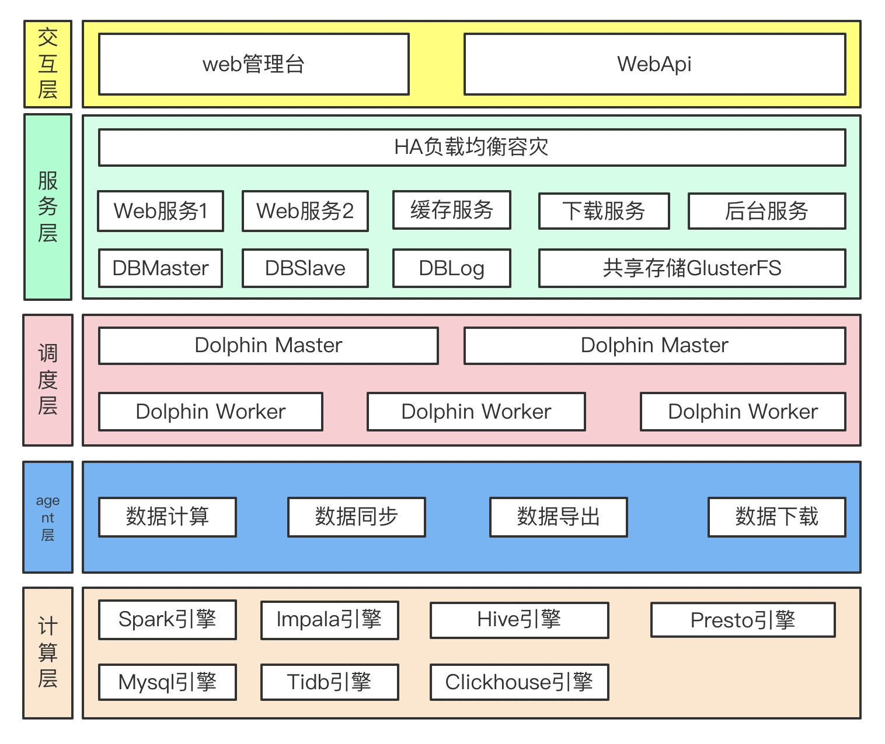
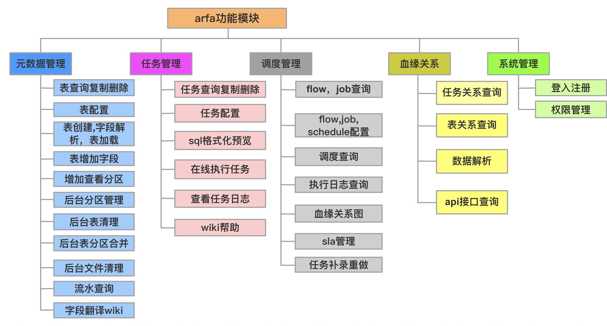
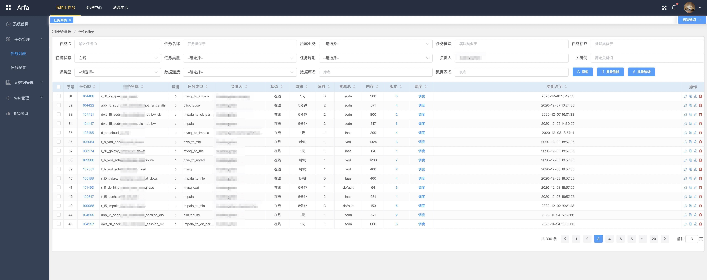
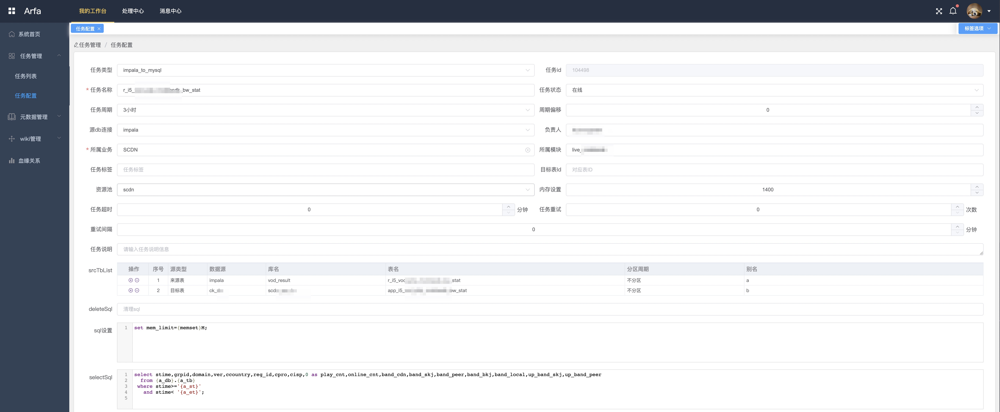
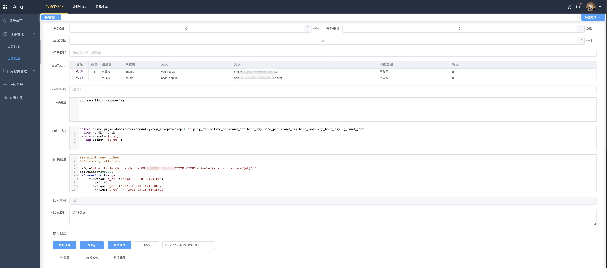
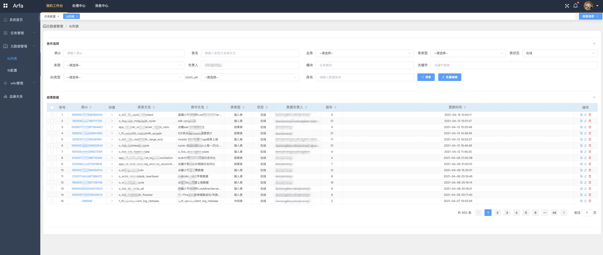
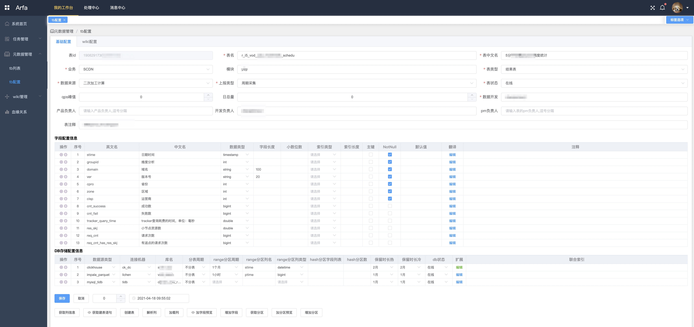
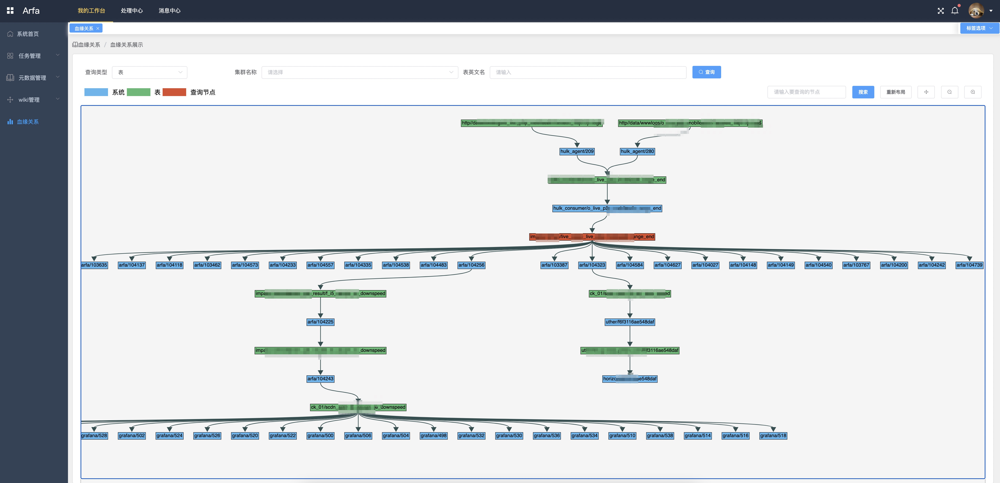

网心-Arfa离线数据开发平台
角色
设计开发负责人
背景
面临的问题
- 如何提高数据管理的效率，数据开发的效率
- 如何管理任务资源的使用
- 如何解决数据入库和同步的效率
- 如何解决任务依赖问题
- 如何解决非通用计算逻辑
- 如何扩展更多的计算引擎
- 如何让任务杀死自动停止
所以需要一款可视化的离线实时开发工具，可以快速进行数据开发，进行任务管理，元数据管理等。
也就是现在阿里云的DataWork，腾讯云的WeData，腾讯内部TdwIDE等提供的数据开发工具
开发工具
- 后端开发语言:python2.7.13
- 后端开发框架:flask,gunicorn,gevent,supervisord
- 数据存储:mysql5.7
- 数据缓存:redis
- 共享存储:glusterfs,keepalived
- 前端框架:nodejs,vue,elment-ui,gojs,jquery,echart,codemirror
- 接入服务:openresty
- 负载均衡:haproxy,keepalived
- 日志切割:logrotate
- 代码同步:rsync
- 数据采集:flume
整体架构

功能模块

离线计算数据开发流程
- 确定业务需求，业务计算规则，业务数据来源
- 划分业务需求为一个或多个阶段（job）
- 确定每个阶段的数据输入，数据输出，计算规则
- 创建每个阶段的数据输出表，确定分区周期，索引字段，数据保留时长等
- 创建每个阶段的任务配置，是否要自定义udf，自定义解析等，调试开发
- 配置任务依赖图，开启任务调度
- 配置报表/邮件/api/即席/grafana大屏/监控
数据开发规范
表命名规范
{表类型}_{cycle}_{业务}_{模块/系统/主题}_{日志名}
表类型取值:
ods 接入表
dwd 清洗后表，
dwm 宽表，多维度汇聚
dws 服务表，少维度汇聚
app 应用表
dim 维度表
cycle计算数据更新周期:
s： second，秒粒度数据：s5，s10，s30
i： minute，分钟粒度数据：i1，i3，i5，i10, i20, i30
h： hour， 小时粒度数据：h1，h3，h4, h6, h8, h12
d： day， 日粒度数据：d1，d15
w： week， 周粒度数据：w1，w2
m： month， 月粒度数据：m1, m6
y： year， 年粒度数据: y1, y2
字段命名规范
命名要求
字段严格用a-z,0-9,_命名，全部小写，字段单词之间用_连接，
单词太长，可以只取前面几个字段,详细名称和解释写入备注，
禁止用_和数字开头,禁止用关键字命名
第1个字段统一是stime（全部精确到秒）
在impala和hive中是timestamp类型，统一所有格式是YYYY-MM-DD HH:II:SS，('2017-11-10 10:20:30')
在mysql和tidb中统一使用datetime类型，格式YYYY-MM-DD HH:II:SS，不区分分钟/小时/日/周/月
在clickhouse中统一使用datetime类型，格式YYYY-MM-DD HH:II:SS
第2个字段如果是多维分析计算
统一命名groupid，int类型
分区规范：
impala和hive中统一分区规范是一级分区,ptime=YYYYMMDDHHIISS（全部精确到秒）
如果是5分钟：ptime=20171113000500
如果是1小时:ptime=20171113010000
如果是1天：ptime=20171113000000
mysql和tidb中一级分区统一是range分区，
分钟分区:p201711131003 values less than('2017-11-13 10:04:00') 代表2017-11-13号10点03分的分区
小时分区:p201711131100 values less than('2017-11-13 12:00:00') 代表2017-11-13号11点的分区
按天分区:p201711130000 values less than('2017-11-14 00:00:00') 代表2017-11-13号分区
clickhouse中，第一分区统一是range分区
天分区:toDate
周分区:toMonday
月分区:toMonth
索引命名规范:
idx_[索引字段前两个字符]，例如key idx_do_st(domain,stream)
合计均值规范:
小计 -9999
去重小计 -9998
关联不上 -9996
原NULL值 -9995
job命名规范
{taskId}_{结果表}_{其他}
sql书写规范
SQL代码的编码原则如下：
- 代码功能完善。
- 代码行清晰、整齐，代码行的整体层次分明、结构化强。
- 代码编写充分考虑执行速度最优的原则。
- 代码中需要添加必要的注释，以增强代码的可读性。
- 规范要求并非强制性约束开发人员的代码编写行为。实际应用中，在不违反常规要求的前提下，允许存在可以理解的偏差。
- SQL代码中应用到的所有SQL关键字、保留字都需使用全大写或小写，例如select/SELECT、from/FROM、where/WHERE、and/AND、 or/OR、union/UNION、insert/INSERT、delete/DELETE、group/GROUP、having/HAVING和count/COUNT等。不能使用大小写混合的方式，例如Select或seLECT等方式。
- 4个空格为1个缩进量，所有的缩进均为1个缩进量的整数倍，按照代码层次对齐。
- 禁止使用select *操作，所有操作必须明确指定列名。
- 对应的括号要求在同一列的位置上。
参考sql规范
常规约定
使用情况
2个集群，3400多个接口，4400多张表，40000个字段，3000多个离线计算任务
7700多条依赖，每天运行实例30万多，12000多个任务版本，50多个用户
系统截图
任务管理  任务基本配置  任务扩展配置  接口管理  接口配置  血缘关系 